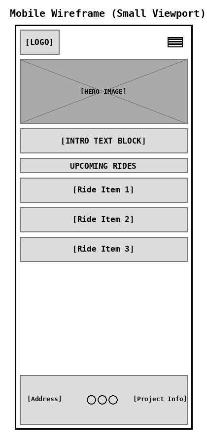
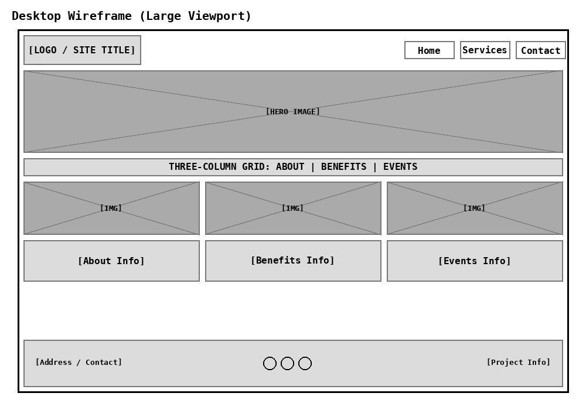

Project Planning: Local Bike Repair and Ride Club
1. Site Name
Site Name: Pedal & Pivot Community Club
Reason: "Pedal" refers to the activity of cycling, while "Pivot" suggests the repair and technical aspect of the club (like a pivot point in a suspension or a change in direction/skill). It sounds professional yet welcoming for a community-focused organization.
Optional Domain: pedalpivot.org
2. Site Purpose
The purpose of the Pedal & Pivot Community Club website is to serve as a central hub for local cycling enthusiasts. It provides information on membership benefits, schedules for guided community rides, and technical resources through repair workshops and maintenance guides. The site aims to lower the barrier to entry for new cyclists while providing a gathering point for experienced riders.
3. Scenarios
- "I've never ridden a bike in the city before; are there any beginner-friendly guided rides I can join to feel safer?"
- "My bike's chain keeps slipping; does the club offer any workshops where I can learn how to fix this myself?"
- "How do I sign up for membership and where do the weekly meetings typically take place?"
4. Color Scheme
The color scheme is designed to evoke a sense of nature, reliability, and energy.
- Deep Slate Blue (#2c3e50): Used for headers, footers, and primary branding elements to convey trust and professionalism.
- Forest Green (#27ae60): Used for accents, call-to-action buttons, and highlighting "Ride" information to represent nature and outdoors.
- Amber (#f39c12): Used for important warnings, safety tips, and highlighted workshop dates to draw attention.
- Light Grey (#f4f7f6): Used as the main background color to keep the site clean and readable.
5. Typography
- Headings: 'Segoe UI' (or sans-serif) - Bold and clean, used for all
<h1> through <h3> tags to ensure high readability and a modern feel.
- Body Text: 'Tahoma' or 'Verdana' - Selected for its clarity and wide spacing, making maintenance guides and schedules easy to read on all screen sizes.
6. Wireframe
Note: Wireframes are black and white sketches focusing on structure and layout.
Small Viewport (Mobile)

Large Viewport (Desktop)
